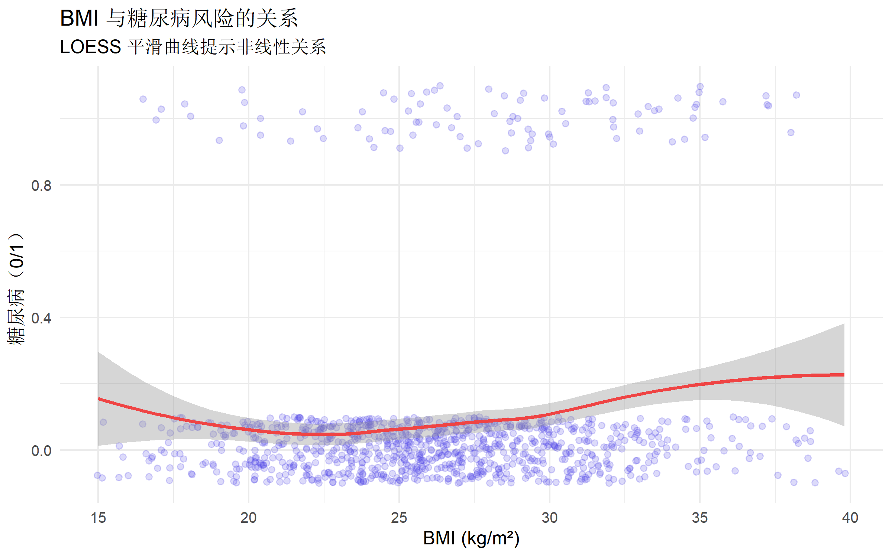
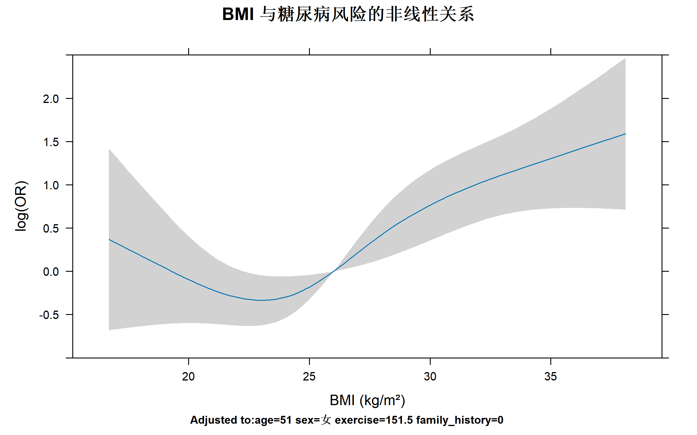
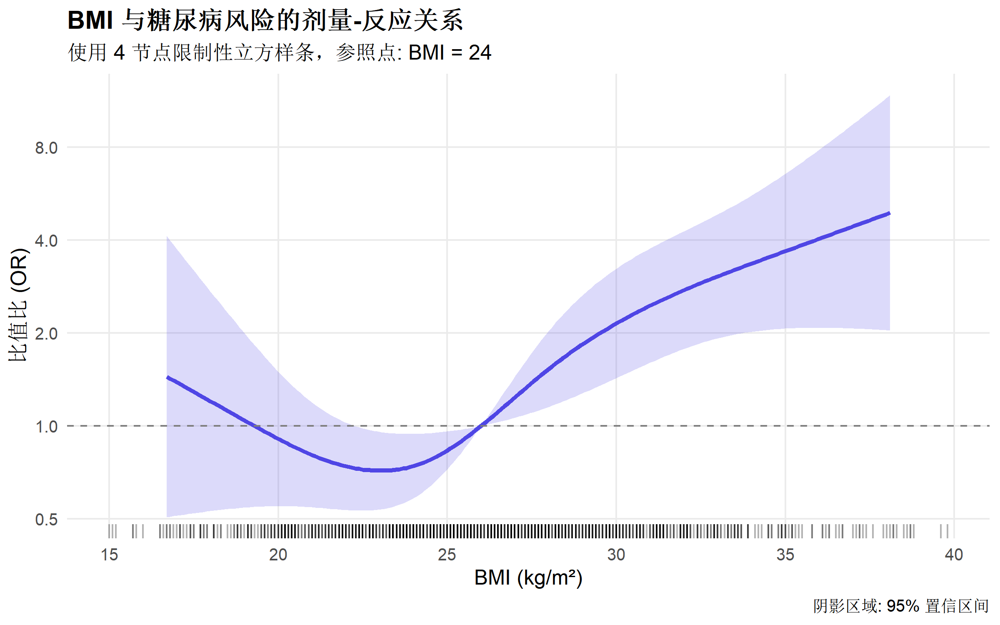
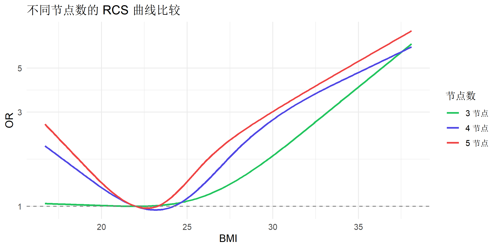
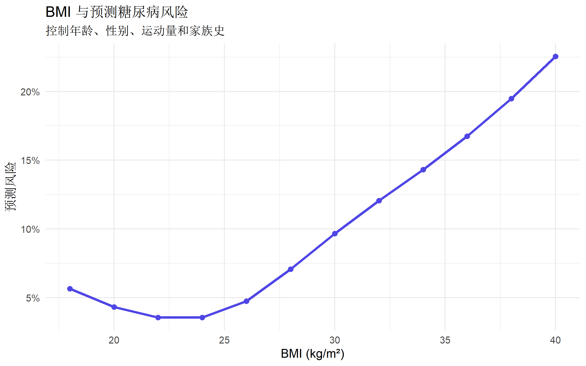
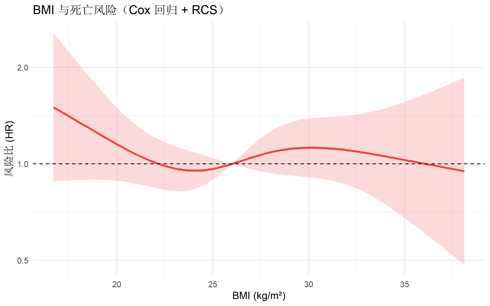
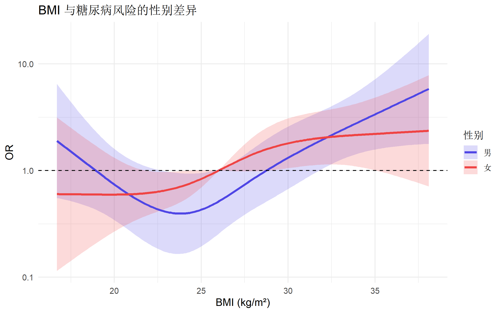
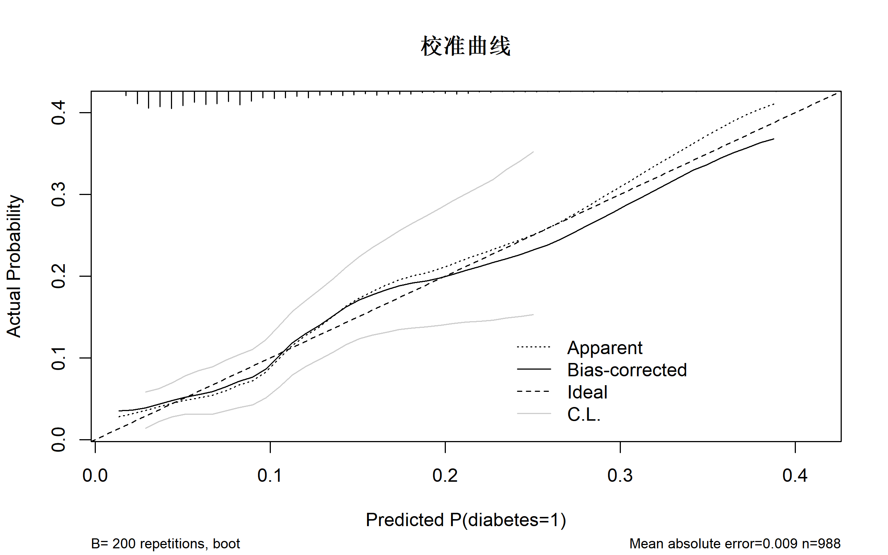
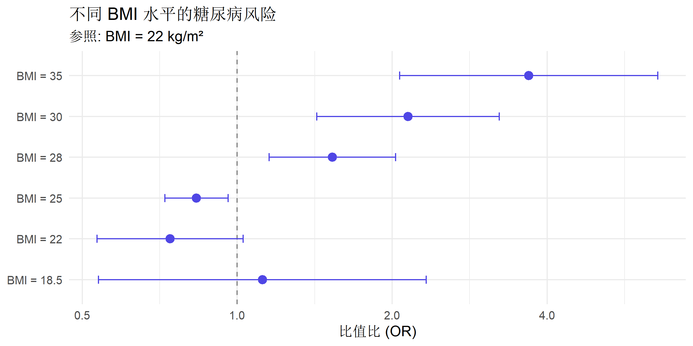

# 核心包
library(rms) # RCS 主力包
library(tidyverse) # 数据处理
library(ggplot2) # 可视化
library(survival) # 生存分析限制性立方样条 (RCS) 完全指南
R语言方法
统计建模
RCS
什么是限制性立方样条？
限制性立方样条（Restricted Cubic Spline, RCS） 是一种灵活的非线性建模方法，用于探索连续变量与结局之间的非线性关系，同时保持曲线在边界处的平滑性。
与其他方法的对比
| 方法 | 优点 | 缺点 |
|---|---|---|
| 线性项 | 简单，易解释 | 可能遗漏非线性 |
| 多项式 | 灵活 | 边界不稳定，难以解释 |
| 分类变量 | 简单 | 丢失信息，切点主观 |
| RCS | 灵活，边界平滑 | 需要选择节点数 |
核心特点
- 分段立方多项式：在节点之间使用三次多项式拟合
- 连续性约束：函数及其一阶、二阶导数在节点处连续
- 边界约束：在最外侧节点之外强制为线性（限制性）
适用场景
| 场景 | 示例 |
|---|---|
| 剂量-反应关系 | 药物剂量与疗效 |
| 非线性风险 | 年龄与死亡率的 J 型关系 |
| 阈值效应 | BMI 与疾病风险 |
| 拐点识别 | 最佳干预切点 |
R 包安装与加载
数据准备
使用模拟的 BMI 与糖尿病数据：
# 模拟数据
set.seed(2024)
n <- 1000
diabetes_data <- tibble(
id = 1:n,
age = round(runif(n, 30, 70)),
sex = factor(sample(c("男", "女"), n, replace = TRUE)),
bmi = round(rnorm(n, 26, 5), 1),
exercise = round(pmax(0, rnorm(n, 150, 60))),
family_history = rbinom(n, 1, 0.25)
) |>
mutate(
# 非线性 BMI 效应（J 型曲线）
bmi_effect = case_when(
bmi < 18.5 ~ 0.5, # 过轻
bmi < 24 ~ -0.3, # 正常（参照）
bmi < 28 ~ 0.2, # 超重
bmi < 32 ~ 0.8, # 肥胖
TRUE ~ 1.5 # 重度肥胖
) + 0.03 * (bmi - 24)^2 / 10, # 额外非线性
# 糖尿病风险
logit_p = -3 +
bmi_effect +
0.04 * (age - 50) -
0.003 * pmax(exercise - 150, 0) +
0.5 * family_history,
p = plogis(logit_p),
diabetes = rbinom(n, 1, p)
)
# 限制 BMI 范围
diabetes_data <- diabetes_data |>
filter(bmi >= 15 & bmi <= 45)
glimpse(diabetes_data)Rows: 988
Columns: 10
$ id <int> 1, 2, 3, 4, 5, 6, 7, 8, 9, 10, 11, 12, 13, 14, 16, 17, …
$ age <dbl> 63, 43, 57, 58, 48, 58, 47, 42, 65, 35, 66, 68, 58, 51,…
$ sex <fct> 女, 女, 男, 女, 女, 男, 男, 男, 女, 女, 女, 女, 女, 女, 男, 男, 男, 女, 男…
$ bmi <dbl> 25.7, 23.5, 21.5, 24.1, 25.1, 22.3, 21.6, 19.0, 28.0, 2…
$ exercise <dbl> 211, 73, 115, 8, 127, 28, 209, 217, 73, 93, 72, 108, 23…
$ family_history <int> 0, 0, 0, 0, 0, 0, 0, 1, 0, 0, 1, 0, 0, 0, 1, 0, 0, 0, 0…
$ bmi_effect <dbl> 0.20867, -0.29925, -0.28125, 0.20003, 0.20363, -0.29133…
$ logit_p <dbl> -2.45433, -3.57925, -3.00125, -2.47997, -2.87637, -2.97…
$ p <dbl> 0.07912248, 0.02713951, 0.04736943, 0.07727434, 0.05333…
$ diabetes <int> 0, 0, 0, 0, 0, 0, 0, 1, 0, 0, 1, 0, 0, 0, 0, 0, 0, 0, 0…# 事件率
mean(diabetes_data$diabetes)[1] 0.09109312探索性分析
# BMI 与糖尿病的关系（初步探索）
ggplot(diabetes_data, aes(x = bmi, y = diabetes)) +
geom_jitter(alpha = 0.2, height = 0.1, color = "#4f46e5") +
geom_smooth(method = "loess", color = "#ef4444") +
labs(
title = "BMI 与糖尿病风险的关系",
subtitle = "LOESS 平滑曲线提示非线性关系",
x = "BMI (kg/m²)",
y = "糖尿病（0/1）"
) +
theme_minimal(base_size = 12)
设置数据分布
rms 包需要先设置数据分布信息：
# 设置数据分布（重要！）
dd <- datadist(diabetes_data)
options(datadist = "dd")基础 RCS 模型
节点数选择
节点数（knots）的推荐：
| 样本量 | 推荐节点数 | 自由度 |
|---|---|---|
| < 100 | 3 | 2 |
| 100-500 | 4 | 3 |
| > 500 | 5 | 4 |
# 4 节点 RCS Logistic 回归
rcs_model <- lrm(
diabetes ~ rcs(bmi, 4) + age + sex + exercise + family_history,
data = diabetes_data,
x = TRUE, y = TRUE # 保留数据用于后续分析
)
print(rcs_model)Logistic Regression Model
lrm(formula = diabetes ~ rcs(bmi, 4) + age + sex + exercise +
family_history, data = diabetes_data, x = TRUE, y = TRUE)
Model Likelihood Discrimination Rank Discrim.
Ratio Test Indexes Indexes
Obs 988 LR chi2 51.03 R2 0.110 C 0.716
0 898 d.f. 7 R2(7,988)0.044 Dxy 0.433
1 90 Pr(> chi2) <0.0001 R2(7,245.4)0.164 gamma 0.433
max |deriv| 2e-10 Brier 0.078 tau-a 0.072
Coef S.E. Wald Z Pr(>|Z|)
Intercept -1.5828 2.1699 -0.73 0.4657
bmi -0.1417 0.0980 -1.45 0.1483
bmi' 0.6742 0.3188 2.11 0.0345
bmi'' -2.0604 1.1134 -1.85 0.0642
age 0.0412 0.0105 3.92 <0.0001
sex=女 0.1248 0.2295 0.54 0.5865
exercise -0.0052 0.0020 -2.61 0.0091
family_history 0.5879 0.2446 2.40 0.0162 解读输出
- Wald χ² 和 P：整体非线性检验
- ANOVA 表：分解线性和非线性效应
# ANOVA 检验（关键！）
anova(rcs_model) Wald Statistics Response: diabetes
Factor Chi-Square d.f. P
bmi 25.00 3 <.0001
Nonlinear 6.44 2 0.0400
age 15.36 1 0.0001
sex 0.30 1 0.5865
exercise 6.80 1 0.0091
family_history 5.78 1 0.0162
TOTAL 46.60 7 <.0001解读： - bmi 行的 P 值：BMI 的整体效应 - Nonlinear 行的 P 值：非线性是否显著 - 如果 Nonlinear P < 0.05，说明需要使用 RCS 而非线性项
可视化非线性效应
基础可视化
# 使用 rms::Predict 函数
pred_bmi <- Predict(rcs_model, bmi, ref.zero = TRUE)
# 绑制效应图
plot(pred_bmi,
xlab = "BMI (kg/m²)",
ylab = "log(OR)",
main = "BMI 与糖尿病风险的非线性关系"
)
自定义 ggplot2 可视化
# 提取预测数据
pred_data <- Predict(rcs_model, bmi, ref.zero = TRUE) |>
as.data.frame()
# 计算 OR
pred_data <- pred_data |>
mutate(
OR = exp(yhat),
OR_lower = exp(lower),
OR_upper = exp(upper)
)
# 高质量可视化
ggplot(pred_data, aes(x = bmi)) +
# 置信区间
geom_ribbon(aes(ymin = OR_lower, ymax = OR_upper),
fill = "#4f46e5", alpha = 0.2
) +
# 主曲线
geom_line(aes(y = OR), color = "#4f46e5", linewidth = 1.2) +
# 参照线
geom_hline(yintercept = 1, linetype = "dashed", color = "gray50") +
# 添加地毯图显示数据分布
geom_rug(
data = diabetes_data, aes(x = bmi),
inherit.aes = FALSE, alpha = 0.3, sides = "b"
) +
scale_y_log10(breaks = c(0.5, 1, 2, 4, 8)) +
labs(
title = "BMI 与糖尿病风险的剂量-反应关系",
subtitle = "使用 4 节点限制性立方样条，参照点: BMI = 24",
x = "BMI (kg/m²)",
y = "比值比 (OR)",
caption = "阴影区域: 95% 置信区间"
) +
theme_minimal(base_size = 12) +
theme(
plot.title = element_text(face = "bold"),
panel.grid.minor = element_blank()
)
设置不同参照点
# 以 BMI = 22（正常中值）为参照
pred_22 <- Predict(rcs_model, bmi,
ref.zero = TRUE,
fun = exp
) # 直接输出 OR
# 更新 datadist 的参照值
dd$limits$bmi[2] <- 22 # 设置参照值为22
options(datadist = "dd")节点数选择
比较不同节点数
# 拟合不同节点数的模型
rcs3 <- lrm(diabetes ~ rcs(bmi, 3) + age + sex, data = diabetes_data)
rcs4 <- lrm(diabetes ~ rcs(bmi, 4) + age + sex, data = diabetes_data)
rcs5 <- lrm(diabetes ~ rcs(bmi, 5) + age + sex, data = diabetes_data)
# AIC 比较
data.frame(
节点数 = 3:5,
自由度 = c(2, 3, 4),
AIC = c(AIC(rcs3), AIC(rcs4), AIC(rcs5))
) 节点数 自由度 AIC
1 3 2 576.3089
2 4 3 575.6357
3 5 4 577.0487# 可视化比较
pred3 <- Predict(rcs3, bmi, ref.zero = TRUE) |>
as.data.frame() |>
mutate(knots = "3 节点")
pred4 <- Predict(rcs4, bmi, ref.zero = TRUE) |>
as.data.frame() |>
mutate(knots = "4 节点")
pred5 <- Predict(rcs5, bmi, ref.zero = TRUE) |>
as.data.frame() |>
mutate(knots = "5 节点")
compare_data <- bind_rows(pred3, pred4, pred5)
ggplot(compare_data, aes(x = bmi, y = exp(yhat), color = knots)) +
geom_line(linewidth = 1) +
geom_hline(yintercept = 1, linetype = "dashed", color = "gray50") +
scale_color_manual(values = c("#22c55e", "#4f46e5", "#ef4444")) +
scale_y_log10() +
labs(
title = "不同节点数的 RCS 曲线比较",
x = "BMI",
y = "OR",
color = "节点数"
) +
theme_minimal(base_size = 12)
自定义节点位置
# 默认节点位置（分位数）
default_knots <- rcspline.eval(diabetes_data$bmi, nk = 4, knots.only = TRUE)
cat("默认节点位置:", default_knots, "\n")默认节点位置: 18.9 24.3 27.9 34.5 # 自定义节点位置
custom_knots <- c(18.5, 24, 28, 32) # 基于 WHO 分类
rcs_custom <- lrm(
diabetes ~ rcs(bmi, custom_knots) + age + sex + family_history,
data = diabetes_data
)
anova(rcs_custom) Wald Statistics Response: diabetes
Factor Chi-Square d.f. P
bmi 23.87 3 <.0001
Nonlinear 6.30 2 0.0429
age 15.22 1 0.0001
sex 0.35 1 0.5536
family_history 5.13 1 0.0235
TOTAL 41.75 6 <.0001阈值效应与拐点分析
视觉识别拐点
# 从曲线识别潜在拐点
pred_detailed <- Predict(rcs_model, bmi = seq(15, 45, 0.5), ref.zero = TRUE) |>
as.data.frame() |>
mutate(OR = exp(yhat))
# 找到 OR = 1 的交点（即风险开始增加的阈值）
threshold_idx <- which.min(abs(pred_detailed$OR - 1))
threshold_bmi <- pred_detailed$bmi[threshold_idx]
cat("风险开始增加的 BMI 阈值约:", round(threshold_bmi, 1), "\n")风险开始增加的 BMI 阈值约: 26 最优切点分析
# 计算各 BMI 水平相对于不同参照的 OR
# 这有助于识别临床有意义的切点
# 创建预测数据框
pred_grid <- expand.grid(
bmi = seq(18, 40, 2),
age = median(diabetes_data$age),
sex = "男",
exercise = median(diabetes_data$exercise),
family_history = 0
)
# 预测风险
pred_grid$prob <- predict(rcs_model, newdata = pred_grid, type = "fitted")
# 可视化风险曲线
ggplot(pred_grid, aes(x = bmi, y = prob)) +
geom_line(color = "#4f46e5", linewidth = 1.2) +
geom_point(color = "#4f46e5", size = 2) +
scale_y_continuous(labels = scales::percent_format()) +
labs(
title = "BMI 与预测糖尿病风险",
subtitle = "控制年龄、性别、运动量和家族史",
x = "BMI (kg/m²)",
y = "预测风险"
) +
theme_minimal(base_size = 12)
与生存分析结合
Cox 回归中的 RCS
# 模拟生存数据
set.seed(42)
survival_data <- diabetes_data |>
mutate(
# 生存时间
time = rexp(n(), rate = 0.05 + 0.02 * diabetes),
time = pmin(time, 10), # 最长随访10年
# 删失
censor_time = runif(n(), 3, 10),
surv_time = pmin(time, censor_time),
status = as.integer(time <= censor_time)
)
# 设置 datadist
dd <- datadist(survival_data)
options(datadist = "dd")
# Cox 回归 with RCS
cox_rcs <- cph(
Surv(surv_time, status) ~ rcs(bmi, 4) + age + sex,
data = survival_data,
x = TRUE, y = TRUE
)
print(cox_rcs)Cox Proportional Hazards Model
cph(formula = Surv(surv_time, status) ~ rcs(bmi, 4) + age + sex,
data = survival_data, x = TRUE, y = TRUE)
Model Tests Discrimination
Indexes
Obs 988 LR chi2 4.27 R2 0.004
Events 249 d.f. 5 R2(5,988)0.000
Center -1.3206 Pr(> chi2) 0.5108 R2(5,249)0.000
Score chi2 4.45 Dxy 0.079
Pr(> chi2) 0.4861
Coef S.E. Wald Z Pr(>|Z|)
bmi -0.0807 0.0500 -1.61 0.1066
bmi' 0.2451 0.1683 1.46 0.1452
bmi'' -0.8160 0.6133 -1.33 0.1834
age 0.0071 0.0056 1.27 0.2026
sex=女 0.0417 0.1272 0.33 0.7429 anova(cox_rcs) Wald Statistics Response: Surv(surv_time, status)
Factor Chi-Square d.f. P
bmi 2.61 3 0.4554
Nonlinear 2.37 2 0.3063
age 1.62 1 0.2026
sex 0.11 1 0.7429
TOTAL 4.45 5 0.4860# 可视化 HR 曲线
pred_cox <- Predict(cox_rcs, bmi, ref.zero = TRUE, fun = exp)
ggplot(as.data.frame(pred_cox), aes(x = bmi)) +
geom_ribbon(aes(ymin = lower, ymax = upper), fill = "#ef4444", alpha = 0.2) +
geom_line(aes(y = yhat), color = "#ef4444", linewidth = 1.2) +
geom_hline(yintercept = 1, linetype = "dashed") +
scale_y_log10() +
labs(
title = "BMI 与死亡风险（Cox 回归 + RCS）",
x = "BMI (kg/m²)",
y = "风险比 (HR)"
) +
theme_minimal(base_size = 12)
多变量非线性模型
# 多个变量使用 RCS
multi_rcs <- lrm(
diabetes ~ rcs(bmi, 4) + rcs(age, 3) + rcs(exercise, 3) + sex + family_history,
data = diabetes_data
)
anova(multi_rcs) Wald Statistics Response: diabetes
Factor Chi-Square d.f. P
bmi 24.86 3 <.0001
Nonlinear 6.24 2 0.0441
age 19.78 2 0.0001
Nonlinear 2.64 1 0.1042
exercise 11.93 2 0.0026
Nonlinear 3.96 1 0.0466
sex 0.22 1 0.6376
family_history 4.97 1 0.0257
TOTAL NONLINEAR 12.33 4 0.0150
TOTAL 52.46 9 <.0001# 可视化所有非线性效应
plot(Predict(multi_rcs), layout = c(2, 3))
交互作用
RCS × 分类变量
# BMI 效应是否因性别而异
rcs_interact <- lrm(
diabetes ~ rcs(bmi, 4) * sex + age + family_history,
data = diabetes_data
)
anova(rcs_interact) Wald Statistics Response: diabetes
Factor Chi-Square d.f. P
bmi (Factor+Higher Order Factors) 28.20 6 0.0001
All Interactions 4.74 3 0.1918
Nonlinear (Factor+Higher Order Factors) 11.50 4 0.0215
sex (Factor+Higher Order Factors) 5.10 4 0.2774
All Interactions 4.74 3 0.1918
age 15.49 1 0.0001
family_history 5.03 1 0.0249
bmi * sex (Factor+Higher Order Factors) 4.74 3 0.1918
Nonlinear 4.61 2 0.0996
Nonlinear Interaction : f(A,B) vs. AB 4.61 2 0.0996
TOTAL NONLINEAR 11.50 4 0.0215
TOTAL NONLINEAR + INTERACTION 11.51 5 0.0422
TOTAL 45.38 9 <.0001# 按性别分层可视化
pred_sex <- Predict(rcs_interact, bmi, sex, ref.zero = TRUE)
ggplot(as.data.frame(pred_sex), aes(
x = bmi, y = exp(yhat),
color = sex, fill = sex
)) +
geom_ribbon(aes(ymin = exp(lower), ymax = exp(upper)), alpha = 0.2, color = NA) +
geom_line(linewidth = 1.2) +
geom_hline(yintercept = 1, linetype = "dashed") +
scale_color_manual(values = c("#4f46e5", "#ef4444")) +
scale_fill_manual(values = c("#4f46e5", "#ef4444")) +
scale_y_log10() +
labs(
title = "BMI 与糖尿病风险的性别差异",
x = "BMI (kg/m²)",
y = "OR",
color = "性别",
fill = "性别"
) +
theme_minimal(base_size = 12)
模型诊断与验证
校准曲线
# 内部验证
cal <- calibrate(rcs_model, B = 200) # 200 次 Bootstrap
plot(cal, main = "校准曲线")
n=988 Mean absolute error=0.009 Mean squared error=0.00012
0.9 Quantile of absolute error=0.017区分度
# C 统计量
cat("C 统计量 (AUC):", rcs_model$stats["C"], "\n")C 统计量 (AUC): 0.7164192 Bootstrap 验证
# 过拟合校正
validate(rcs_model, B = 200) index.orig training test optimism index.corrected Lower Upper
Dxy 0.4328 0.4517 0.4087 0.0431 0.3898 0.2816 0.5064
R2 0.1102 0.1244 0.0979 0.0265 0.0838 0.0227 0.1423
Intercept 0.0000 0.0000 -0.2105 0.2105 -0.2105 -0.8082 0.7148
Slope 1.0000 1.0000 0.8965 0.1035 0.8965 0.6111 1.2971
Emax 0.0000 0.0000 0.1001 -0.1001 0.1001 -0.0383 0.2673
D 0.0506 0.0576 0.0447 0.0129 0.0378 0.0065 0.0665
U -0.0020 -0.0020 0.0008 -0.0029 0.0008 -0.0037 0.0098
Q 0.0527 0.0596 0.0439 0.0157 0.0369 -0.0009 0.0680
B 0.0777 0.0768 0.0786 -0.0018 0.0795 0.0654 0.0917
g 0.9112 0.9662 0.8492 0.1170 0.7941 0.5244 1.0690
gp 0.0712 0.0747 0.0671 0.0076 0.0636 0.0413 0.0845
n
Dxy 200
R2 200
Intercept 200
Slope 200
Emax 200
D 200
U 200
Q 200
B 200
g 200
gp 200结果报告
标准格式
# 提取特定 BMI 值的 OR
specific_bmi <- c(18.5, 22, 25, 28, 30, 35)
ref_bmi <- 22 # 参照值
# 重新设置参照
dd$limits$bmi[2] <- ref_bmi
options(datadist = "dd")
# 预测
pred_specific <- Predict(rcs_model, bmi = specific_bmi, ref.zero = TRUE)
pred_table <- as.data.frame(pred_specific) |>
mutate(
OR = round(exp(yhat), 2),
CI_lower = round(exp(lower), 2),
CI_upper = round(exp(upper), 2),
OR_CI = paste0(OR, " (", CI_lower, "-", CI_upper, ")")
) |>
select(bmi, OR_CI)
pred_table bmi OR_CI
1 18.5 1.12 (0.54-2.33)
2 22.0 0.74 (0.53-1.03)
3 25.0 0.83 (0.72-0.96)
4 28.0 1.53 (1.15-2.03)
5 30.0 2.15 (1.43-3.23)
6 35.0 3.68 (2.07-6.56)森林图风格展示
# 准备数据
forest_data <- as.data.frame(pred_specific) |>
mutate(
OR = exp(yhat),
lower = exp(lower),
upper = exp(upper),
label = paste0("BMI = ", bmi)
)
ggplot(forest_data, aes(x = OR, y = reorder(label, bmi))) +
geom_vline(xintercept = 1, linetype = "dashed", color = "gray50") +
geom_errorbarh(aes(xmin = lower, xmax = upper), height = 0.2, color = "#4f46e5") +
geom_point(size = 3, color = "#4f46e5") +
scale_x_log10(breaks = c(0.5, 1, 2, 4)) +
labs(
title = "不同 BMI 水平的糖尿病风险",
subtitle = "参照: BMI = 22 kg/m²",
x = "比值比 (OR)",
y = NULL
) +
theme_minimal(base_size = 12)
常见问题与陷阱
1. 节点数选择
# - 节点过少：可能遗漏真实非线性
# - 节点过多：可能过拟合
# - 推荐：使用 AIC/BIC 选择，或遵循样本量规则2. 边界不稳定
# RCS 强制边界线性，但数据稀疏区域仍可能不稳定
# 解决方案：
# - 检查边界数据量
# - 考虑排除极端值
# - 增加 Bootstrap 验证3. 因果推断局限
# RCS 探索的是关联，不是因果
# 非线性关系可能由混杂导致
# 因果推断需要额外方法（DAG, 工具变量等）4. 参照点选择
# 不同参照点不影响非线性检验，但影响 OR 解读
# 推荐使用临床有意义的参照点（如 BMI = 22 或 24）完整分析模板
# ========== RCS 分析完整流程 ==========
library(rms)
# 1. 设置数据分布
dd <- datadist(data)
options(datadist = "dd")
# 2. 拟合模型
model <- lrm(y ~ rcs(x, 4) + covariates, data = data)
# 3. 检验非线性
anova(model)
# 4. 可视化
Predict(model, x, ref.zero = TRUE) |> plot()
# 5. 报告特定值的 OR
Predict(model, x = c(value1, value2, value3), ref.zero = TRUE)
# 6. 模型验证
validate(model, B = 200)
calibrate(model, B = 200)总结
| 步骤 | 函数 | 目的 |
|---|---|---|
| 设置分布 | datadist() |
定义变量的参照值和范围 |
| 建立 RCS | rcs(x, k) |
生成样条基函数 |
| 非线性检验 | anova() |
判断是否需要非线性项 |
| 可视化 | Predict() + plot() |
展示剂量-反应关系 |
| 验证 | validate(), calibrate() |
内部验证 |
报告 RCS 分析的 Checklist
推荐阅读
- Harrell FE. Regression Modeling Strategies
- Desquilbet L, Mariotti F (2010). Dose-response analyses using restricted cubic spline functions. Stata Journal
- rms 包文档